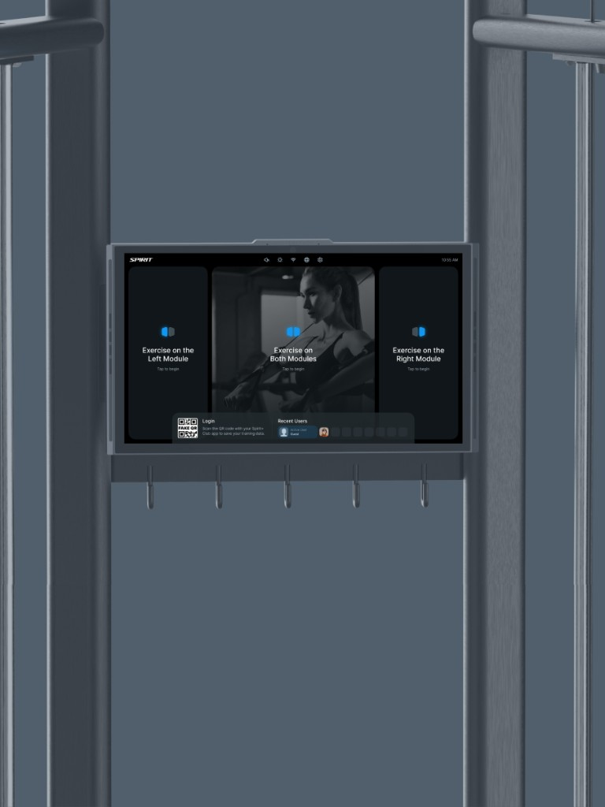

项目机遇
为什么要做
数字化升级随之产生了新的交互矛盾：商用健身房场景下，器械需要适配单人训练、双人同用、多人高频排队交替使用等复杂情况。用户已经习惯传统器械开箱即用、无需登录的简易操作，而智能设备却要处理多电机协同、多用户切换、训练数据精准归属等复杂问题。如何保留老用户的操作直觉，化解数字化带来的交互冲突，适配健身房真实复杂的使用场景，正是本次设计需要攻克的核心机会与挑战。

传统多功能拉力训练器依靠手动插拔配重块调节阻力，训练过程没有数据记录能力。随着力量器械从纯机械结构向数字化智能硬件转型，我们自研数字阻力算法，实现阻力分段运算，支持训练全程数据采集，完成器械底层能力的数字化升级。
数字化升级随之产生了新的交互矛盾：商用健身房场景下，器械需要适配单人训练、双人同用、多人高频排队交替使用等复杂情况。用户已经习惯传统器械开箱即用、无需登录的简易操作，而智能设备却要处理多电机协同、多用户切换、训练数据精准归属等复杂问题。如何保留老用户的操作直觉，化解数字化带来的交互冲突，适配健身房真实复杂的使用场景，正是本次设计需要攻克的核心机会与挑战。

传统小飞鸟重量调节粗、模式单一，无法智能评估、记录训练数据，高度依赖人工指导，难以满足精细化力量训练需求。

针对这些痛点，我们这套数字化训练系统，带来了全新的产品能力。通过新的数字化系统，用户可以方便地管理自己的训练数据。

摆脱传统配重铁块手动调节；算法实现阻力数字化；留存运动数据；支持单人 / 双人 / 多人交替训练，提升商用器械利用率。

同一个设备，要同时兼顾场馆运营、普通会员自主训练、私教教学这三类场景。

新型设备将要面临的考验。

结合用户场景推出多人使用一个设备时的用户体验和账户切换。
搭建一套通用交互底层系统，动态适配单屏 / 双屏硬件，内置多用户快速切换机制，同时兼顾教学场景与自主训练场景。

在不牺牲单人体验的同时满足双人的体验？
搭建一套通用交互底层系统，动态适配单屏 / 双屏硬件，内置多用户快速切换机制，同时兼顾教学场景与自主训练场景。

从传统到数字化健身，用户没有登录习惯。登录时机、任意界面离开后的接续、间歇运动、左右屏切换记录，都需要在不打断训练的前提下解决。

摒弃两套独立界面的传统方案，通过模块化组件重组实现硬件兼容。定义模块优先级规则：核心训练信息永久可视，次要信息在单屏状态下收纳，双屏状态下展开分流。

重点展示会员轮换使用器械完整交互链路。传统设备需要完整退出再重新登录，耗时久。
设计方案：快捷切换面板保存近期登录会员；教练一键切换学员档案；权限隔离防止数据混淆；闲置自动登出，兼顾隐私与场馆效率。

展示两种场景下的页面流转：私教授课模式侧重课程调度、动作纠错、学员实时数据；自主训练模式侧重训练计划、历史记录、自助动作指引。

搭建标准化嵌入式硬件 UI 组件库，适配健身设备触控操作（考虑健身房潮湿、手指出汗、快速操作等硬件环境特性）。

做这个项目的时候，我没有把思路局限在「给某一款硬件做一套界面」上。商用健身房不是理想实验室，高峰期排队、双人同时训练、人员来回交替才是真实日常。所以我选择从场馆真实的使用流出发，搭建了这套可以弹性适配的交互底座。
同一套交互逻辑，就能兼容单屏、双屏两种硬件版本，再配上多用户快速切换的机制，同时接住三方截然不同的诉求：场馆老板关心运营效率，私教需要专业教学与数据辅助，普通会员又要保留老器械那种拿起来就用的简单体验，最终产出一套可以批量复制落地的商用力量器械交互方案。
整个项目过程中我们也同步沉淀了技术创新，目前有 1 项国际专利在申请、1 项国内发明专利已经公布。这套设计落地之后，拿到了欧洲两千台的订单，带动产品销量明显上涨。对 C 端会员来说，不用改变过去的使用习惯，又能把个人训练数据准确记录下来，用户粘性得到提升；对 B 端场馆，切实解决了高峰时段多人共用设备的痛点，客户的整体满意度也有明显改善，真正做到把体验思考转化成实际的商业结果。


PH100 2.0改版设计
打磨训练中的交互细节，把真实的使用体验做舒服。
我能够协助团队承接完整链路的交互设计工作，参与从前期需求构思到产品最终上线全流程。专注搭建逻辑清晰、交互顺滑的产品框架，用可靠的交互方案支撑项目稳步推进。
©2026 Winnie
Welcome to contact.